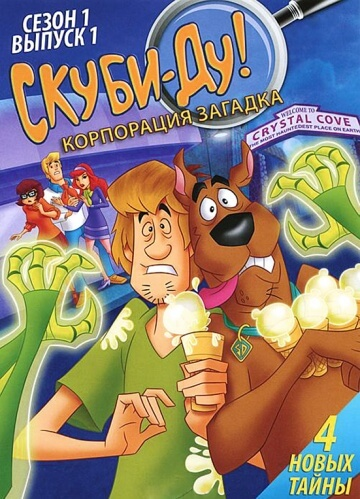
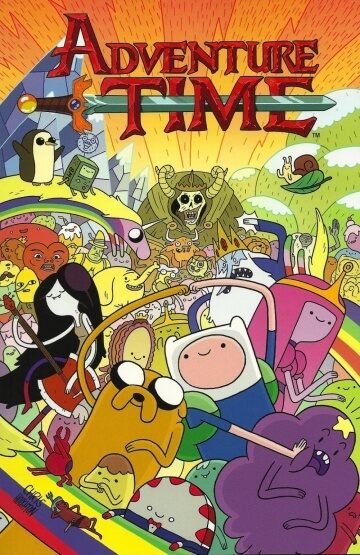
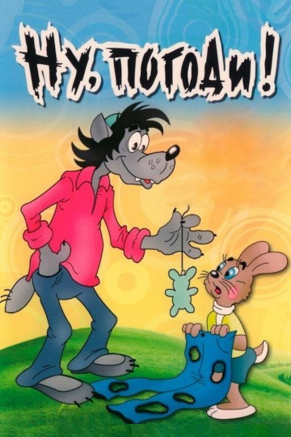
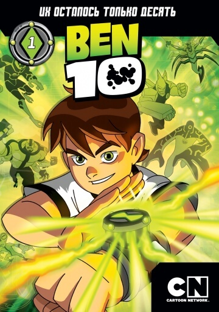
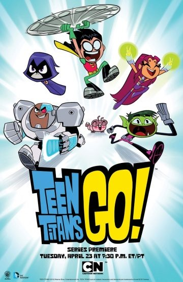
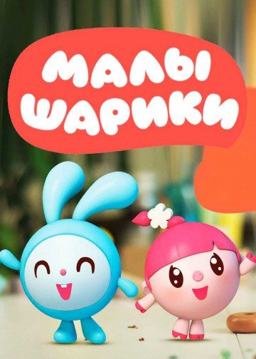
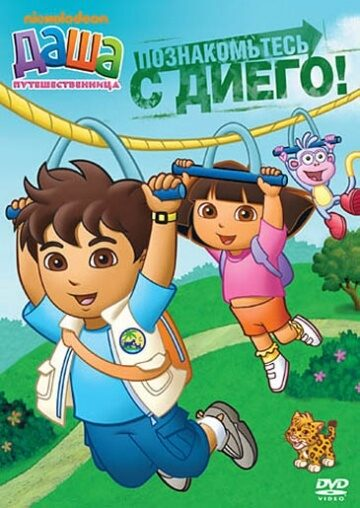
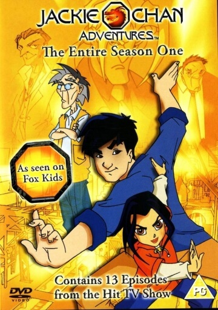
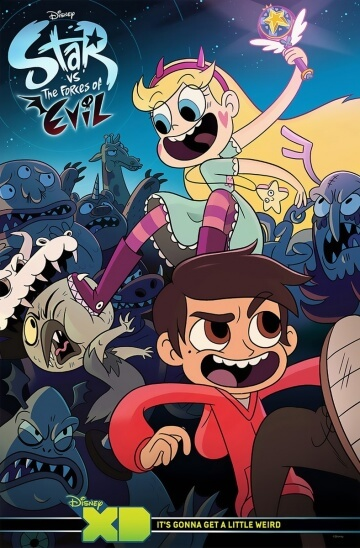

Представляем вашему вниманию подборку приключенческих мультфильмов.
Топ 10 лучших мультфильмов:
Жанр: мультфильм, фэнтези, боевик, триллер, приключения, семейный, мультсериал
Режиссёр: Иджинио Страффи
В ролях: Джемма Донати, Илария Латини, Домитилья Д`амико, Летиция Чиампа, Перла Либератори,
Джемма Донати, Илария Латини, Домитилья Д`амико, Летиция Чиампа, Перла Либератори,
ЭСовременный иностранный мультсериал, который за двенадцать лет существования собрал у себя целую армию маленьких и даже взрослых поклонников. Этот мультсериал повествует о приключениях фей - волшебниц, которые однажды по воле судьбы встретились друг с другом. Основная задача девушек состоит в борьбе с силами зла, коих на пути фей встречается отнюдь немало. Помимо этого, наши героини, будучи все- таки молодыми девушками, вынуждены решать и свои проблемы, связанные, преимущественно, с личной жизнью героинь. Самой главной героиней мультсериала является девушка по имени Блум, которая однажды открыла для себя волшебный мир фей. Мало того, Блум и сама оказалась феей. Девушка поступила в специальную школу для фей, где стала организатором Клуба Винкс, куда и вошли три других ее подруги – однокурсницы. Так и началась длительная и захватывающая приключенческая история фей Винкс, основой для которого послужила история самой Блум и ее планеты Домино, на которой девушка родилась. Ваш ребенок сможет наслаждаться сериалом очень длительное время, если увлечется. Но, поскольку у мультсериала миллионы поклонников по всему миру, стоит предположить, что мультфильм действительно достоин внимания и интереса.

Жанр: мультфильм, боевик, комедия, детектив, приключения, семейный, мультсериал
Режиссёр: Виктор Кук, Курт Геда, Лорен Монтгомери
В ролях: Фрэнк Уэлкер, Минди Кон, Грэй Гриффин, Мэттью Лиллард, Патрик Варбертон,
Фрэнк Уэлкер, Минди Кон, Грэй Гриффин, Мэттью Лиллард, Патрик Варбертон,
Нашим маленьким зрителям вновь предстоит столкнуться с уже любимыми и известными героями, пережить все опасные и захватывающие приключения вместе с ними, окунувшись в волшебный мир, полный загадок, буквально с головой. Главными героями анимационного сериала становятся все та же любимая компания, где мы можем встретить Дафну, Велму, Фреда, Шегги и главного любимчика – забавного пса по кличке Скуби – Ду. Наши друзья все так же, невзирая на опасности, пытаются искоренить всю преступность, которую они встречают. На этот раз наши друзья окажутся в городке под названием Кристальная Бухта. Обычный, на первый взгляд, городок, но мы – то с вами уже понимаем, что там не все так чисто. Нас ждут поистине леденящие кровь истории, волшебные события и много паранормального. Но окажется ли на поверку все это настолько необычным, каким мы увидим это впервые? Или за всем волшебством стоят хитрые и злобные преступники? Узнаем, когда посмотрим. И, конечно же, повеселимся, глядя на Скуби, который, как и прежде, не прочь полакомиться вкусностями и спокойно отсидеться в тепле и безопасности, пока друзья занимаются важным делом. Но мы – то знаем, что ему это не удастся просто так, ведь он всегда найдет способ вляпаться во что – нибудь необычное.

Жанр: мультфильм, фэнтези, комедия, приключения, семейный, мультсериал
Режиссёр:Ларри Лэйчлитер, Андрес Салафф, Элизабет Ито
В ролях: Джереми Шэда, Джон Ди Маджио, Том Кенни, Хинден Уолш, Ники Янг, Пендлтон Уорд,
Ди Брэдли Бейкер, Мария Бэмфорд, Стив Литтл, Оливия Олсон
Этот иностранный мультсериал повествует о приключениях двоих главных героев, причем, ни где – то, а в постапокалиптическом мире! Есть на свете такие некие Земли под названием Земли Ооо. Вот там – то и живут наши герои – мальчик по имени Финн и его лучший друг – пес по кличке Джейк. Причем, живут наши герои не в доме, не во дворце, а на дереве. Просто в домике на дереве, как мечтают жить миллионы детей. Дело в том, что еще будучи маленьким Финн дал клятву себе и всем остальным, что будет помогать всем нуждающимся, когда подрастет. Вообще, все действие мультсериала происходит в волшебных местах, где и обитают волшебные и необычные существа, например, принцесса Бубльгум или королева Вампиров по имени Марселин. Каждый эпизод мультика не связан ничем с предыдущими, кроме того, что все происходит в хронологическом порядке, например, Финн взрослеет на наших глазах. Ну, и, конечно, главные герои остаются неизменными. Все действие мультсериала, как уже было сказано, происходит в мире после апокалипсиса, точнее, после ядерной войны. После нее на Земле остались жить лишь некоторые из людей, и то, в мутировавшем виде. А самое главное в том, что в мире появилось волшебство и магия, с чем мы и столкнемся в мультсериале неоднократно.

Жанр: мультфильм, комедия, семейный, приключения, мультсериал
Режиссёр:Вячеслав Котёночкин, Юрий Бутырин, Владимир Тарасов
В ролях: Клара Румянова, Анатолий Папанов, Геннадий Хазанов,
Владимир Сошальский, Игорь Христенко, Ольга Зверева
Добрый, интересный, забавный мультсериал советских времен, известный нам с детства, обязательно должен быть просмотрен нашими детьми. Ведь только советские мультфильмы являются настоящей классикой и несут в себе столько доброты и жизненных уроков, сколько не найдешь больше нигде. Героями этого мультсериала являются все также животные, в данном случае, маленький Зайчик и хулиганистый Волк. И вся история мультфильма заключается в том, что Волк пытается поймать Зайца и, видимо, его съесть. Но, естественно, вся эта нехитрая история наполнена огромным количеством веселых приключений, где мы сопереживаем Зайцу, а иногда и самому Волку. Здесь животные снова совсем, как люди. Со своими характерами, историями, судьбами, жизненными принципами и вредными привычками, они дают маленьким детям не только порцию радости и смеха, но и важные жизненные уроки, вроде умения дружить, избегать зла по отношению к другим и многие прочие. В этом мультфильме собраны различные животные, среди которых можно узнать образы даже некоторых известных артистов. Вашему ребенку будет интересно и смешно смотреть этот мультсериал впервые, а Вам точно будет приятно и тепло пересмотреть его еще один раз, пусть даже и взрослым человеком.

Жанр:мультфильм, фантастика, боевик, приключения, семейный, мультсериал
Режиссёр: Скутер Тидвелл, Себастьян Монтес, Алекс Сото
В ролях:Тара Стронг, Пол Айдинг, Мэган Смит, Ди Брэдли Бейкер, Джим Уорд, Ричард МакГонагл,
Фред Татаскьор, Ричард Стивен Хорвиц, Ричард Дойл, Дуайт Шульц
Интересней зарубежный мультсериал, который будет интересен и самой маленькой зрительской аудитории и зрителям постарше. Мультик расскажет нам о веселых и захватывающих приключениях одного необычного мальчика, получившего в раз одну занимательную суперспособность. Главным героем здесь становится мальчик по имени Бен, который однажды вместе со своей сестрой и дедушкой отправляется на отдых в летние каникулы. Казалось бы, чем необычным могло закончиться подобное путешествие, но внезапно наш герой находит необычный аппарат – Омнитрикс. Маленький приборчик позволили мальчику перевоплощаться в любого из десяти доступных супергероев, приобретая уникальную силу каждого. Теперь, когда прибор еще и вобрал в себя генетический материал мальчика, он позволил нашему герою стать серьезным защитником планеты, даже несмотря на его юный возраст. Но на Омнитрикс, конечно же, нашлись и другие охотники. Некий злодей по имени Вилгакс давно хотел заполучить прибор, чтобы получить власть надо всей Вселенной. Какие еще тайны предстоит узнать нашему герою о самых близких людях и сколько новых приключений ему придется пережить? Узнаем только при просмотре мультсериала.

Жанр:мультфильм, фантастика, боевик, комедия, семейный, мультсериал
Режиссёр: Peter Rida Michail, Luke Cormican, Скотт О’Брайэн
В ролях:Грег Сайпс, Скотт Менвиль, Хари Пэйтон, Тара Стронг, Хинден Уолш, Лорен Том,
Кевин Майкл Ричардсон, Джон Ди Маджио, Peter Rida Michail, Эшли Джонсон
Зарубежный мультипликационный сериал, который расскажет зрительской аудитории о приключения юных титанов, с которыми мы уже имели возможность познакомиться в предыдущей части мультика. Сейчас сюжет будет разворачиваться вокруг событий, произошедших в прошлом. Мы увидим главных героев еще в те времена, когда они не были теми, кем являются сейчас. В те далекие и бесславные времена наши главные персонажи были еще самыми обыкновенными подростками, которые целыми днями только и делали, что просиживали за компьютером все свое свободное время. Помимо этого, наши будущие титаны занимались тем, чем занимаются все другие подростки. Только уже тогда стало понятно, что с нашими героями что – то не так, ведь даже самые обыкновенные действия для них были наполнены трудностями, да такими, что создавали их самые настоящие злодеи, вроде роботов и прочих подобных. Поэтому со временем ребята все – таки поймут, что способны на большее, а вокруг постоянно происходит что – то захватывающее и интересное. Теперь вокруг наших персонажей жизнь закрутится с огромной силой и постепенно они встанут на путь добра и станут защитниками целой огромной планеты. Они прославятся и получат звание настоящих титанов. Настоящих юных титанов.

Жанр: мультфильм, комедия, семейный, мультсериал
Режиссёр: Марина Мошкова, Катерина Савчук, Татьяна Мошкова
В ролях: Анна Геллер, Светлана Кузнецова,
Марианна Мокшина, Ксения Бржезовская
Наверняка вы и ваши детки уже давно познакомились с такими веселыми персонажами, как Смешарики. Но ведь когда – то же и они были совсем маленькими, только – только познавали окружающий нас мир и стремились к тому, чтобы стать самыми умными на земле. Данный отечественный мультсериал познакомит ваших детей с такими героями, как Ежик, Крошик, Нюшенька, Лосяшик и еще многими другими. Каждый из них назван не просто так. Дело в том, что все наши герои обладают круглой формой тела и еще совсем маленькие по возрасту, отсюда и малышарики. Каждый день ребята стараются развивать в себе те особенности, которыми они отличаются от других: например, кто – то лучше всего пишет, а кто – то явно проявляет особую тягу к науке. Но все вместе они постоянно находят забавные приключения и стремятся изучить все, что находится вокруг них. Наши маленькие друзья постоянно сталкиваются с тем, чего еще никогда не видели или не знали. Например, ваши дети вместе с дружной компанией познакомятся с разнообразными предметами, каждый из которых имеет особенные свойства, свой вес, длину, ширину и прочее. Помимо этого, они научатся различным умным словам, значения которых будет растолковано в процессе мультика. А еще, наши герои научат вашего ребенка самым разным, но очень полезным моральным качествам, которые нужно прививать с самого раннего детства.

Жанр: мультфильм, приключения, семейный, мультсериал
Режиссёр: Генри Мэдден, Гари Конрад, Кэти МакУэйн
В ролях:Марк Уэйнер, Харрисон Чад, Кэтлин Херлс, Саша Торо, Риган Мизрахи,
Александрия Суарез, Эшли Флеминг, Джейк Барбеидж, Хосе Селая, Чарли Тайнер
Этот мультсериал подойдет, скорее, для самых маленьких ребят, хотя, и некоторые взрослые люди до сих пор любят отвечать на вопросы нашей героини. Мы столкнемся с обучающим мультфильмом, где Ваш ребенок становится и зрителем, и участником одновременно. А любого ребенка несомненно увлечет любое действо, где малыш должен внимательно следить за событиями, чтобы в последствие ответить правильно на все вопросы. Главными героями данного мультсериала являются, собственно, сама Даша – путешественница и ее друг – обезьянка по имени башмачок. Друзья, как понятно из названия, путешествуют по миру и просят выполнить Вашего ребенка различные задания, давая ему некоторое время на ответ. Самые интересные задания связаны с еще одним главным персонажем, на этот раз, отрицательным. В мире друзей существует некий жулик, который вечно попадается Даше и Башмачку на пути, совершая различные проделки. Задача Даши, башмачки и вашего ребенка и заключается в том, чтобы отыскать и прогнать Жулика. Помимо этого, при просмотре мультсериала Ваш ребенок познает некоторые особенности окружающего мира, учится разделять плохое и хорошее, а также, начинает потихоньку понимать, что такое помощь и взаимовыручка, пусть пока и в игровой форме.

Жанр: мультфильм, фэнтези, боевик, комедия, приключения, семейный, мультсериал
Режиссёр: Дэвид Хартман, Джейн Ву, Брайан Эндрюс
В ролях: Джеки Чан, Джеймс Си, Стэйси Чан, Саб Симоно, Ной Нельсон, Клэнси Браун,
Адам Болдуин, Джулиан Сэндс, Джон Ди Маджио, Джеймс Хонг
Этот мультсериал был выпушен на экраны еще в двухтысячном году, поэтому за эти годы он набрал огромную популярность среди зрителей. Теперь пора другому, еще маленькому поколению, познакомиться с теми персонажами, которых так любили в юности теперь уже взрослые люди. К тому же, наверное, уже с даже маленькие зрители когда – нибудь видели фильмы с Джеки Чаном или хотя бы слышали о нем. А, может быть, кто - то из детишек уже является поклонником этого актера, тогда этот мультсериал точно для них. Кстати говоря, мультфильм напоминает нам не только о Джеки Чане, здесь мы еще легко разглядим образ еще одного киногероя – Индианы Джонса, вечно пребывающего в путешествиях и приключениях. Наш главный герой в каждой серии отправляется в новое путешествие, где своей целью он ставит нахождение самых разнообразных древностей и артефактов, весьма ценных в наше время. Причем, некоторые из них обладают еще и магической силой. Вот только наш Джеки совсем не гонится за материальной ценностью предметов старины, в отличие ото многих других людей, которые не прочь заполучить прибыльную вещицу. Поэтому нашему герою частенько приходится вступать в жесткие схватки с противниками. Благо наш герой искусно владеет многими единоборствами и с легкостью преодолевает все трудности, прямо, как настоящий Джеки Чан.

Жанр: мультфильм, фантастика, фэнтези, комедия, приключения, семейный, мультсериал
Режиссёр: Аарон Хэммерсли, Пьеро Пилузо, Дэвид Вассон
В ролях: Иден Шер, Адам МакАртур, Грэй Гриффин, Алан Тьюдик, Дэрон Нефси, Доминик Бисигнано,
Джефф Беннетт, Фред Татаскьор, Эбби Эллиотт, Эрик Бауза
Современный американский мультипликационный сериал, который расскажет нам историю необыкновенной девочки и ее друзей. Мультик точно понравится маленьким зрителям, которым интересно все волшебное и магическое. Сюжет мультика начинает развиваться в другом измерении, где и живет наша главная героиня по имени Стар Баттерфляй. Наша героиня живет со своими родителями обыкновенной для них жизнью ровно до тех пор, пока на свое четырнадцатилетние не получает в подарок настоящую волшебную палочку! Теперь наша девочка настолько увлеклась подарком и ее возможностями, что чуть не уничтожила свой город, в котором жила. Поэтому семья Стар приняла лучшее решение – отправить дочь на планету Землю на постоянное место жительства. Таким образом наша героиня попадает на Землю в семью, состоящую из родителей и их сына – подростка по имени Марко. Мальчика все вокруг считают самым настоящим тихоней и робким парнем, что очень не нравится самому герою. Обладая такой репутацией, наш Марко всей душой стремится к самым опасным и сумасшедшим приключениям. Кто знает, может быть, именно Стар ему поможет… А нам только и остается, что наблюдать за веселыми и волшебными приключениями подростков и их друзей.